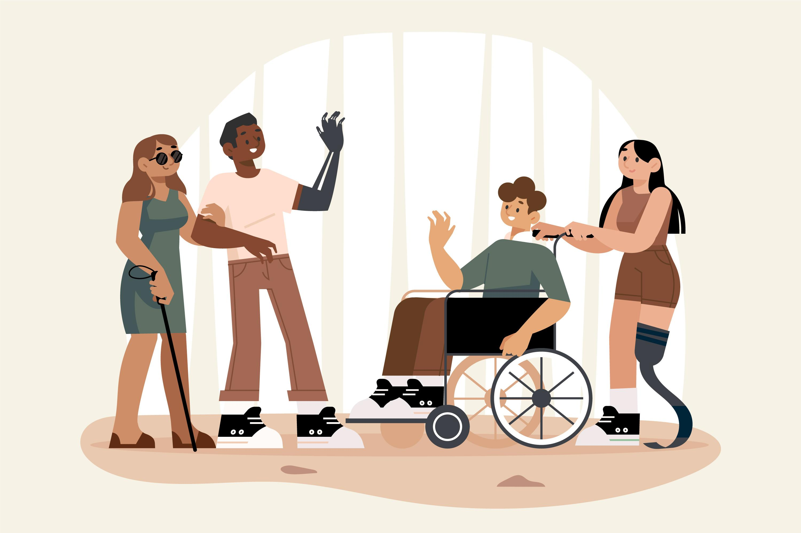

Instructions to Quiz
Our quiz follows accessibility principles to ensure it can be used by everyone. We use semantic HTML elements to clearly group related questions. Each radio button is labeled properly for better screen reader support. Keyboard navigation is fully supported, allowing users to move through the quiz without a mouse. Overall, the design is simple, clear, and inclusive for all users. This quiz is part of our mission to help more people understand what accessibility really means, and how disability can affect the way people experience the world.
